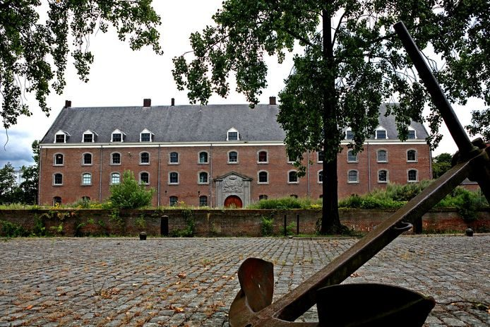
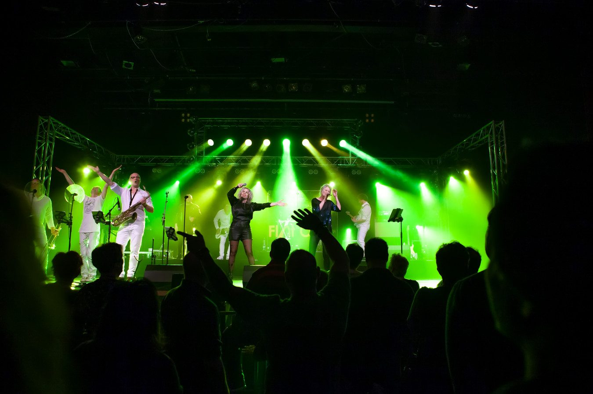
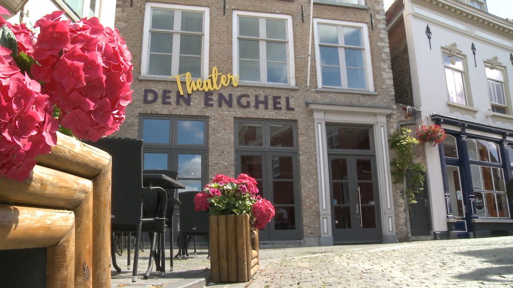
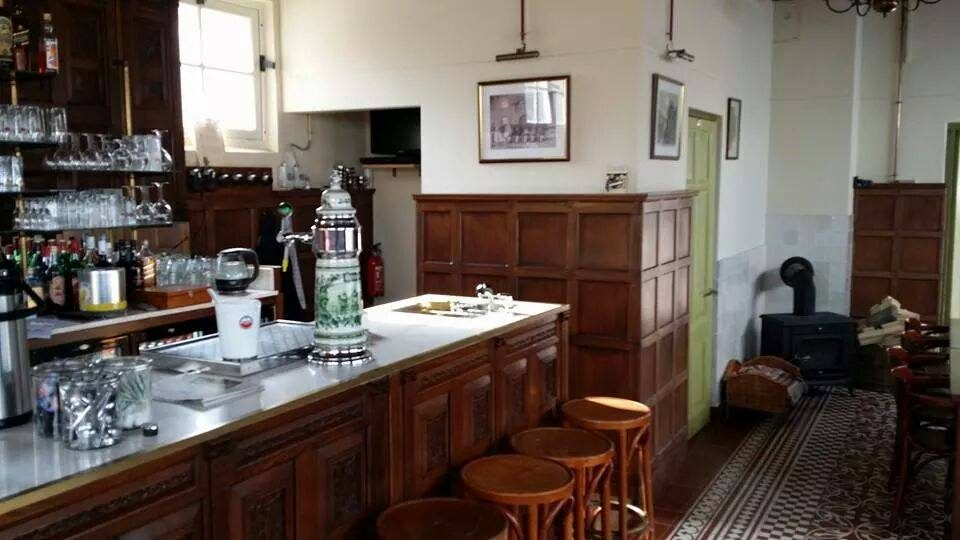
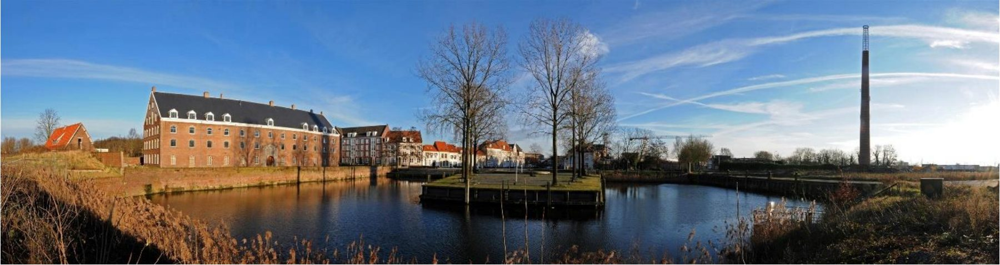

Het Groot Arsenaal
Een kolossaal gebouw uit 1764, flink gerestaureerd en klaar voor gasten op elke verdieping.
12 zalen · sinds 1764Meer info

Vier historische locaties in Bergen op Zoom, voor bruiloft, feest, congres of afscheid. Van een herenkamer voor een klein gezelschap tot een zaal voor 2.500 gasten.
Elk gebouw heeft een eigen verhaal en een eigen sfeer. U regelt alles via één aanspreekpunt.

Een kolossaal gebouw uit 1764, flink gerestaureerd en klaar voor gasten op elke verdieping.
Onze zaal met XXL-mogelijkheden, op de centrumring tegenover de laatste historische stadspoort.

Het voormalige koffiehuis aan de Grote Markt, met uitzicht op het historisch centrum.

Een gezellige Vlaamse taveerne op nog geen 100 meter van het Groot Arsenaal.
Van een vergadering voor tien personen tot een feest voor honderden gasten.
Maak jullie speciale dag compleet. Den Enghel ligt recht tegenover het stadhuis.
Groot Arsenaal · De Stoelemat · Den EnghelZin in een feestje? Van gewoon "op café gaan" tot een luxe feest met catering.
Alle vier de locatiesVan een executive meeting in de Herenkamer tot een bijeenkomst voor 100 personen.
Groot Arsenaal · Den Enghel · SpiritumLaat uw netwerk groeien, met geluid, licht en presentatiemiddelen in huis.
Groot Arsenaal · De StoelematIn onze grootste zaal met podium van 200 m², of in ons kleinkunsttheater.
De Stoelemat · Den EnghelOns team staat voor u klaar en neemt u zorgen uit handen terwijl u afscheid neemt.
Alle vier de locatiesPromoot uw nieuwste boek met een presentatie of bespreking op deze locatie.
Het SpiritumVerwen uzelf met een jeneverproeverij in het historische Spiritum.
Het Spiritum
We hadden de grond van het Groot Arsenaal ook kunnen gebruiken voor een modern pand. Toch hebben we bewust gekozen om de oude kenmerken van het gebouw te behouden en te gebruiken. Dat geeft de sfeer die een evenement nodig heeft, met alle moderne gemakken erbij.
Voor al onze locaties geldt: we stellen samen met u de wensen op en zorgen voor de rest. Dan hoeft u zich maar op één ding te richten: genieten met uw gasten.
Alles hebben we al meegemaakt, tot een mega kleedlokaal voor de wielerronde van Nederland.
"Het is met name onze flexibiliteit die al dit soort evenementen mogelijk maakt."
De sfeer van een locatie voelt u pas echt als u er staat. Maak een afspraak, dan bekijken we samen welke zaal bij uw gelegenheid past.
Geschikte locatie gevonden voor uw gelegenheid? Vraag vrijblijvend naar de mogelijkheden, hopelijk mogen we u binnenkort verwelkomen.
Bel ons voor de mogelijkheden of om een afspraak te maken.